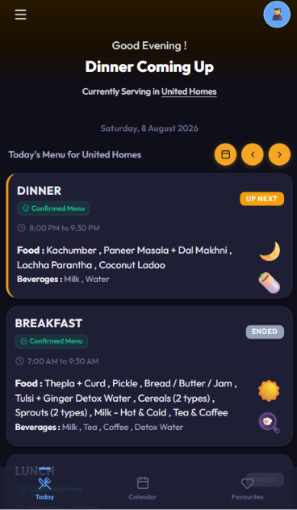
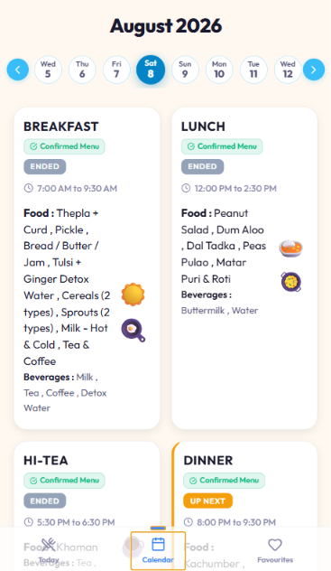
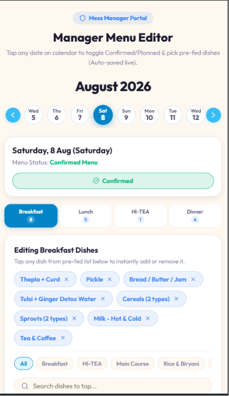
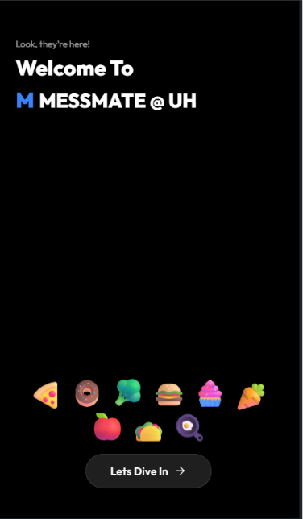

Check the day in seconds.
See the current or upcoming meal, browse menus by date, and read clear meal timings. Light and dark themes support different viewing preferences, with a home-screen installation option for quick access.
MESSMATE @ UH / 2026
A clearer daily ritual for hostel students. MessMate brings planned menus, confirmed meals, and serving times into one mobile-first experience.

THE PROBLEM
A monthly schedule tells students what is planned. When dishes change, that schedule no longer answers the everyday question: what is actually being served?
MessMate makes that distinction explicit. Each meal carries a planned or confirmed status alongside its dishes and serving window, so students can check before heading to the mess.
THE PRODUCT
See the current or upcoming meal, browse menus by date, and read clear meal timings. Light and dark themes support different viewing preferences, with a home-screen installation option for quick access.
The menu editor supports dish changes, upcoming dates, and planned or confirmed status. Firebase subscriptions bring published menu overrides to connected student views without a refresh.
INSIDE THE APP
Actual screenshots from the project repository, showing an earlier UI snapshot. The live app continues to evolve. Select any screen to view it full size.




IMPLEMENTATION
Bundled menu data provides the planned meals and dates.
Firebase Realtime Database stores menu overrides. The React view subscribes to those changes.
The menu hook caches overrides in localStorage and reads that cache if Firebase is unavailable.
TOOLS BEHIND THE EXPERIENCE
EXPLORE MESSMATE